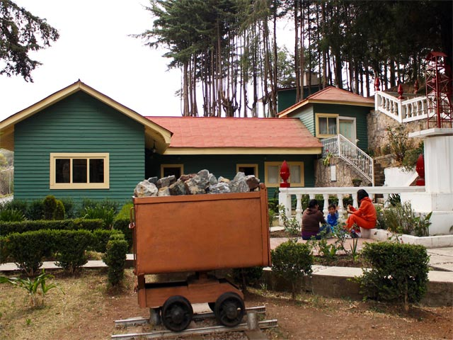

Palacio Municipal
Imagen: Secretaria de Cultura y Turismo

Museo de Mineria
Imagen: Gobierno del Estado de México

Presa Brockman
Imagen: Secretaria de Cultura y Turismo

Teatro Juarez

Socavón San Juan
Imagen: Secretaria de Cultura y Turismo